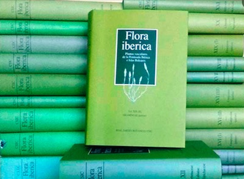
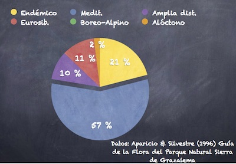
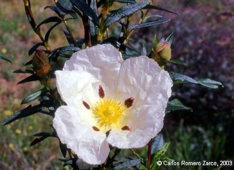
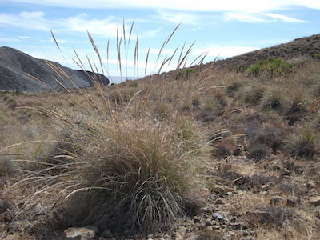
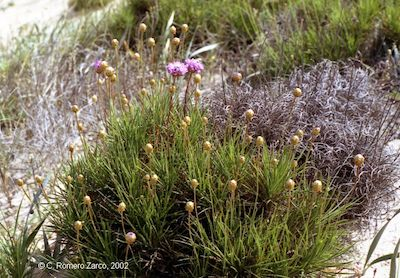
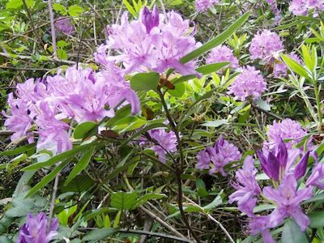
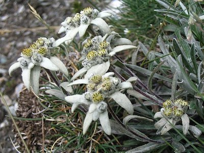

- Nos referimos en este apartado a
la Península Ibérica más las Islas
Baleares, un territorio formado por
Portugal continental, España continental,
Islas Baleares y Andorra.
|
- La importancia de nuestra flora es
consecuencia de:
- Nuestra posición
geográfica, entre dos continentes.
- Dos regiones biogeogáficas:
Eurosiberiana y Mediterránea.
- Gran extensión
de la zona de clima mediterráneo comparada
con otros países mediterráneos.
|
- El mayor programa de investigación
sobre la flora ibérico-balear es el proyecto Flora
iberica, iniciado en 1980 y
terminado en 2021 (41 años de duración), con
11 fases en la que participaron 255
autores pertenecientes a 72
instituciones de 14 países diferentes.
|
- Desde sus inicios, el proyecto fue
liderado por Santiago Castroviejo Bolívar
(Moaña, 1946 - Madrid, 2009), quien fue capaz
de aunar los esfuerzos de muchos
investigadores de su generación y de ilusionar
a los de la siguiente para que se pudiera
completar una obra tanto tiempo anhelada.
|
- En el año 1986 se publicó
el primer volumen de Flora Iberica. En
septiembre de 2021 se publicó la
segunda parte del volumen 19, último en ver la
luz de un total de 21 volúmenes de la obra.
|
- Según esta obra (3), la flora
ibérico-balear incluye:
|
- 189 familias, siendo las
3 más importantes Asteraceae, Leguminosae y
Gramineae.
|
|
|
- 6.948 taxones (6.176 spp.
y 772 subspp.)
|
- Es la flora más importante de
Europa (excluyendo las floras de Rusia y
de Turquía, ambas con extensos territorios en
Asia).
|
- El
porcentaje de taxones endémicos se
sitúa en 19,3 %, muy superior a los
valores del centro y N de Europa (Alemania
0,6 %). Ligeramente inferior a Marruecos
(21,4 %) y Turquía (32,9), paises con un
contingente importante de especies no
mediterráneas (regiones Saharo-Arábiga e
Irano-Turaniana, respectivamente).
|
Es el
valor más alto de los paises europeos
exclusivamente mediterráneos, muy superior al
de Italia (11,7 %) y Grecia (13 %). (4)
|
- La flora
alóctona representa aproximadamente del 10 %
del total (3).
|
- La flora ibérica comparte especies
con otros territorios dentro o fuera de la
Región Mediterránea (5):
|
- El
mayor contingente sería el elemento
mediterráneo (en sentido amplio):
especies que se distribuyen por la mayor
parte de la cuenca Mediterránea. Una buena
parte de este elemento es compartido con
el NW de África o con la región
macaronésica.
|
- El segundo conjunto sería el elemento
eurosiberiano, más importante en la
franja atlántica, desde el País Vasco hasta
Cádiz.
|
- El tercer elemento es el elemento
endémico. Se ha calculado un número de
1.286 taxones endémicos de la España
continental (2).
|
- Otros elementos de menor
importancia pueden adquirir cierto
protagonismo en determinadas zonas o en
ecosistemas concretos:
|
- Plantas
holárticas (Hemisferio Norte) o
de amplia distribución (cosmopolitas
o subcosmopolitas).
|
- Elemento Paleotropical,
resto de la flora terciaria del Tethys: Laurus,
Prunus, Rhododendron, Buxus,
Ilex.
|
- Elemento Sáharo-Arabigo,
especies llegadas del sur y del este:
quenopodiáceas,Tamarix.
|
- Elemento
Irano-Turaniano, especies que
colonizaron la cuenca mediterránea
procedentes de las estepas orientales
durante la desecación del Mediterráneo
en el Messiniense, última edad
del Mioceno (7,2-5,3 m.a.): Ephedra,
quenopodiáceas, Stipa.
|
- Elemento Boreo-Alpino,
especies que fueron "empujadas" por las
glaciaciones cuaternaria y quedaron
"atrapadas" en las montañas del sur, donde
se diversificaron: Lycopodium, Salix,
Saxifraga.
|
- Elemento Alóctono,
especies introducidas de diversa
procedencia.
|
|
Santiago Castroviejo Bolívar,
coordinador
general de Flora iberica - Foto: L. Medina

Los 21
tomos de Flora iberica

Ejemplo
de espectro corológico. Importancia
relativa de los elementos corológicos en la
flora del P.N. Srra. de Grazalema (Cádiz).

En la
flora ibérica hay 11 especies de jaras
(Cistus). Una es mediterráneo-macaronésica,
3 son mediterráneas, 6 son mediterráneo-occidentales y
una es endémica. Son muy
características de la vegetación mediterránea.

Stipa
tenacissima (esparto). El género cuenta con
numerosas especies, la mayoría de origen Irano-
Turaniano. Foto: P.N: Cabo de Gata (Almería).
C.R.Z.

Armeria pungens (Plumbaginaceae), de las
54 especies de la flora ibérico-balear, 45
son endémicas de esta flora (83 %).

Rhododendron ponticum subsp. baeticum
(Ericaceae). El género es de origen
paleotropical, la especie mediterránea y
la subespecie endémica del SO de la
Península. C.R.Z.

Leontopodium
alpinum (edelweiss, compuesta) de
la flora boreo-alpina presente en los Pirineos.
De Tobias Gasser - above Lac de Moiry (CH, Wallis), CC
BY-SA 2.5,
https://commons.wikimedia.org
|